BUSINESSNow is the central Delivery Command Center for KSAP Technologies — a fully integrated Professional Services Automation (PSA) platform purpose-built for Oracle Transportation Management (OTM) consulting engagements. It replaces Rocketlane, Smartsheet, and manual Google Sheet workflows with a single, role-aware application.
📁
Project Execution
WBS hierarchy, milestones, tasks, Gantt view, phase gates, Kanban board, and blueprint templates.
⏱️
Time Tracking & Approval
Weekly grid timesheet entry, billable/non-billable toggling, multi-level approval flow, delegation, and self-approval prevention.
👥
Resource Management
Utilization heatmap, soft/hard allocation, capacity forecasting, staffing requests, and skills tracking.
💰
Finance & Billing
Contracts (T&M, fixed-fee, retainer, milestone), invoices, T&M line-item generation, rate cards, and change order tracking.
🔒
RBAC Identity (v7)
Multi-role switcher, self-approval guardrails, approval delegation, and admin user management.
📊
Pipeline & Reporting
Executive portfolio view, customer health scoring, prospect CRM, opportunity tracking, and account analytics.
Technology Stack
| Layer | Technology |
|---|
| Frontend | React 19 + Vite 7, TypeScript 5.9, Tailwind CSS, shadcn/ui |
| Backend API | Express 5, Node.js 24, TypeScript |
| Database | PostgreSQL + Drizzle ORM |
| Validation | Zod v4, drizzle-zod |
| Infrastructure | pnpm monorepo, esbuild, Replit deployment |
2.1 Sign In
BUSINESSNow uses a persona-based demo login. The sign-in screen presents every team member with their name, title, and primary role badge. Select your name and click Select a person to continue to enter the platform. A search field lets you filter by name or role.
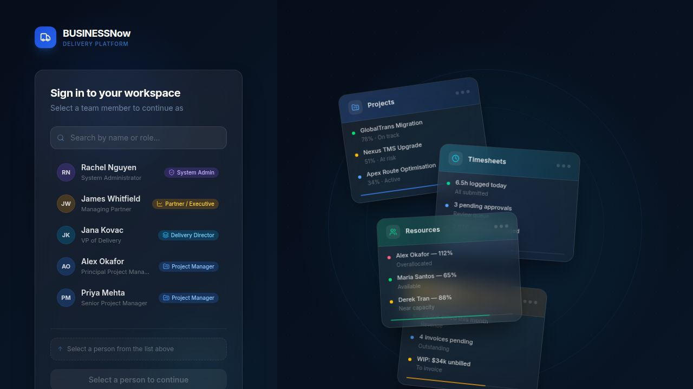
Figure 2.1 — Sign-In Screen. Each user is shown with their primary role badge (System Admin, Partner / Executive, Delivery Director, Project Manager, etc.).
2.2 Context Selector — "Who Are You Working As?"
For any user who manages direct reports, a Context Selector appears immediately after login. This lets managers choose whether to work in their own context or step into a team member's view — without requiring a separate login.
ℹ️
Managers only. The context selector only appears for users whose org-chart node has at least one direct report. Individual contributors proceed directly to their dashboard.
- Your own view: Select your own name (labeled YOU) to work as yourself with your full permissions.
- Direct report view: Select a team member to step into their workspace. The top bar shows a persistent context indicator. Click it at any time to switch context or return to your own view.
- The selector only shows once per session. Navigating between pages does not re-trigger it.
2.3 Role Switcher — Dual-Mode Identity (v7 New)
New in v7, the Role Switcher is a persistent badge in the top navigation bar. Users who hold multiple elevated roles can switch between them at any time without logging out. The active role badge is color-coded by function and drives all navigation, permissions, and data visibility.
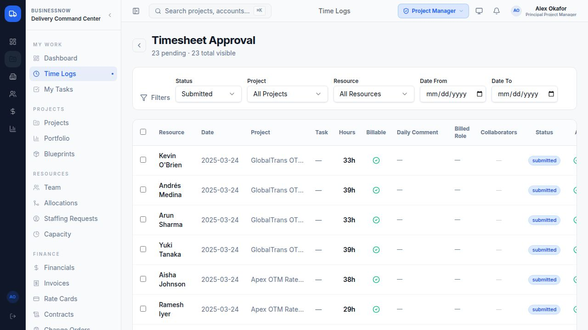
Figure 2.3 — The role badge (here "Project Manager") in the top bar is a dropdown. Click it to switch between your assigned roles instantly.
System Admin
Partner / Executive
Delivery Director
Project Manager
Resource Manager
Finance Manager
Consultant
Business Dev
Employee (Self)
🔒
RBAC Guardrail Active. Every user always has the base Employee (Self) role, which allows viewing and submitting their own data only. Elevated roles (PM, Director, Admin, etc.) are additive and assigned by a System Admin. Switching roles changes navigation, data scope, and available actions immediately.
2.4 Navigation Layout
The app uses a three-panel layout: a narrow Global Rail on the far left for section switching, a Context Sidebar for in-section navigation, and the Main Canvas for content. The top bar provides global search (⌘K), notifications, the role switcher, and the user profile link.
⌨️
Global Search: Press ⌘K (Mac) or Ctrl+K (Windows) anywhere to open the command palette. Search projects, accounts, resources, and actions by name.
Each role lands on a purpose-built dashboard. The content, metrics, and quick-actions shown are scoped to the active role — a Consultant sees only their own tasks and timesheets, while a System Admin sees the firm-wide portfolio command center.
3.1 Admin / Portfolio Command Center
The admin dashboard provides a full firm-wide view: Total ARR, active projects, invoice collection rate, and at-risk project count. Three widget panels show project status distribution, invoice cash flow breakdown, and a resource capacity pulse summary.
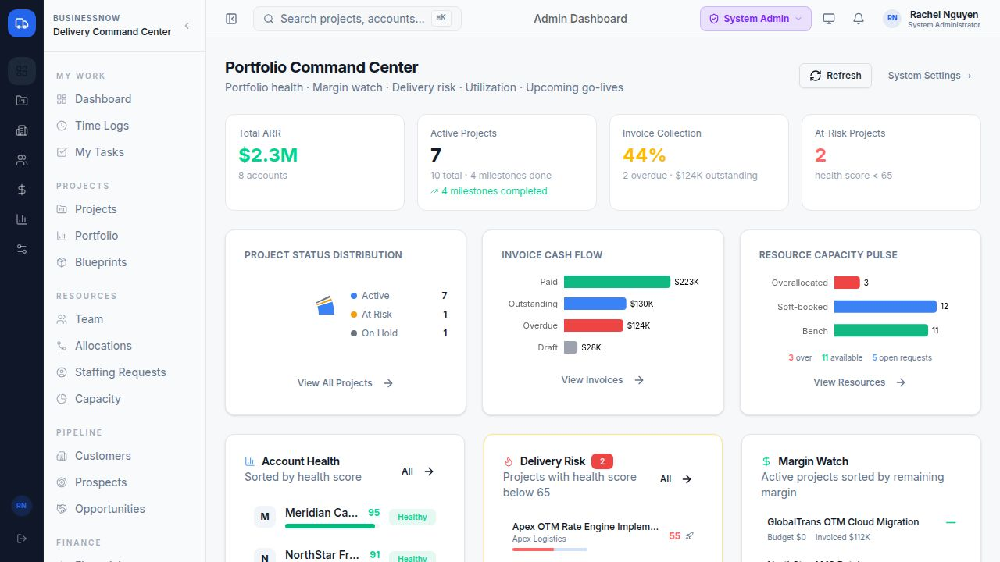
Figure 3.1 — Portfolio Command Center (System Admin view). Panels include Account Health sorted by score, Delivery Risk flagging projects below health 65, and Margin Watch.
Key Dashboard Metrics
| Metric | Description |
|---|
| Total ARR | Annual Recurring Revenue across all active accounts |
| Active Projects | Count of projects in Active or At Risk status |
| Invoice Collection | Percentage of invoiced value collected; overdue flag in red |
| At-Risk Projects | Projects with composite health score below 65 |
| Resource Capacity Pulse | Summary of overallocated / soft-booked / bench resources |
3.2 PM Dashboard
Project Managers land on a Delivery Workspace that lists their today's action items — overdue milestones, pending approvals, and at-risk tasks — with direct links. A banner alerts on team members who have not submitted timesheets for the current week.
3.3 Executive Portfolio
Partners and Executives see a high-level Executive Portfolio with eight KPI cards spanning active projects, budget health, revenue at risk, go-live pipeline, allocated FTE, and overdue invoices. Below, a sortable table shows every project with health score, progress, budget, and billing columns.
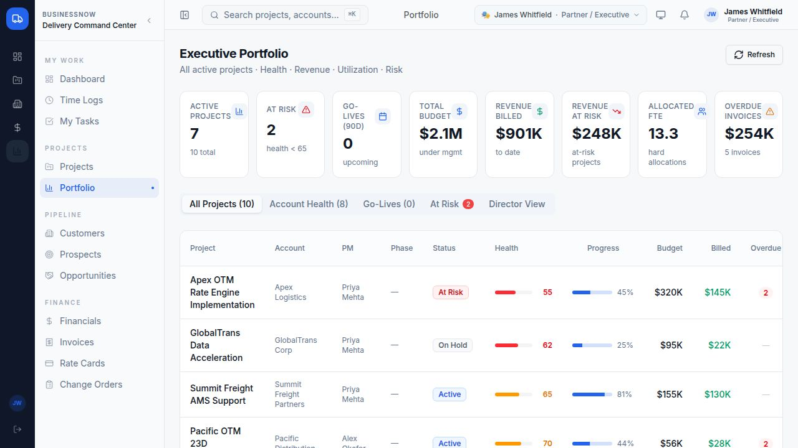
Figure 3.3 — Executive Portfolio (Partner / Executive role). Tabs: All Projects, Account Health, Go-Lives, At Risk, and Director View for org-chart drill-down.
4.1 Projects Directory
The Projects Directory shows all projects the current role has access to. Projects are grouped into Kanban columns by status (On Hold, Active, At Risk, Completed) and can be dragged between columns to update status. Switch between Kanban, Table, and Gantt views using the toolbar.
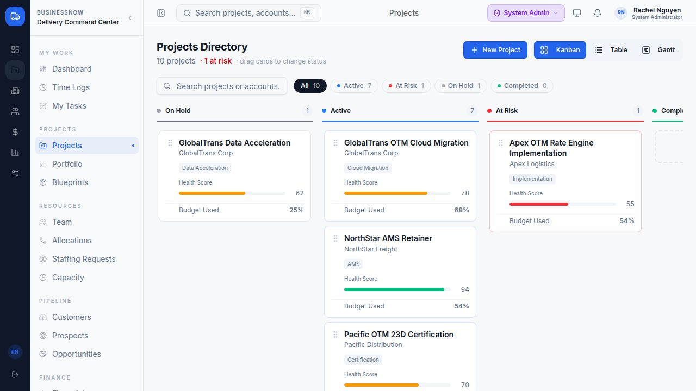
Figure 4.1 — Projects Directory (Kanban view). Each card shows the customer, project type tag, health score, and budget used percentage. Filter by status using the tab bar.
Project Status Definitions
| Status | Meaning |
|---|
| Active | Delivery underway; time, billing, and milestones are fully tracked |
| At Risk | Health score below 65 or one or more RAG indicators red/amber |
| On Hold | Paused — no time entry is allowed; invoice generation suspended |
| Completed | Closed via the closure gate wizard; profitability snapshot locked |
4.2 Project Health Scoring
Each project carries a composite Health Score (0–100) derived from four dimensions: Budget (cost-to-plan), Hours (ETC vs. estimate), Timeline (milestone on-time rate), and Risks (open risk items). A score below 65 triggers the "At Risk" status and surfaces the project on the Delivery Risk widget on the admin dashboard.
4.3 Milestones
Milestones come in three types: Project (internal delivery gates), Payment (triggers invoice generation), and External (client sign-offs). Each milestone can have a sign-off requirement, deliverables list, and invoice amount.
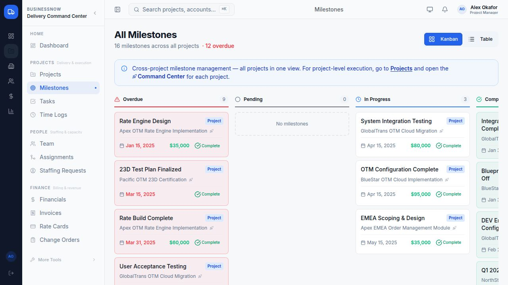
Figure 4.3 — Milestones view. Overdue milestones are highlighted in red. Payment milestones show a billing percentage and link to the invoice module.
4.4 Tasks & WBS
The Work Breakdown Structure (WBS) supports a seven-level hierarchy: Project → Phase → Work Package → Task → Sub-Task → Deliverable → Activity. Tasks show estimated vs. actual hours, ETC (Estimate to Complete), assignees, dependencies, and comments with @mention support.
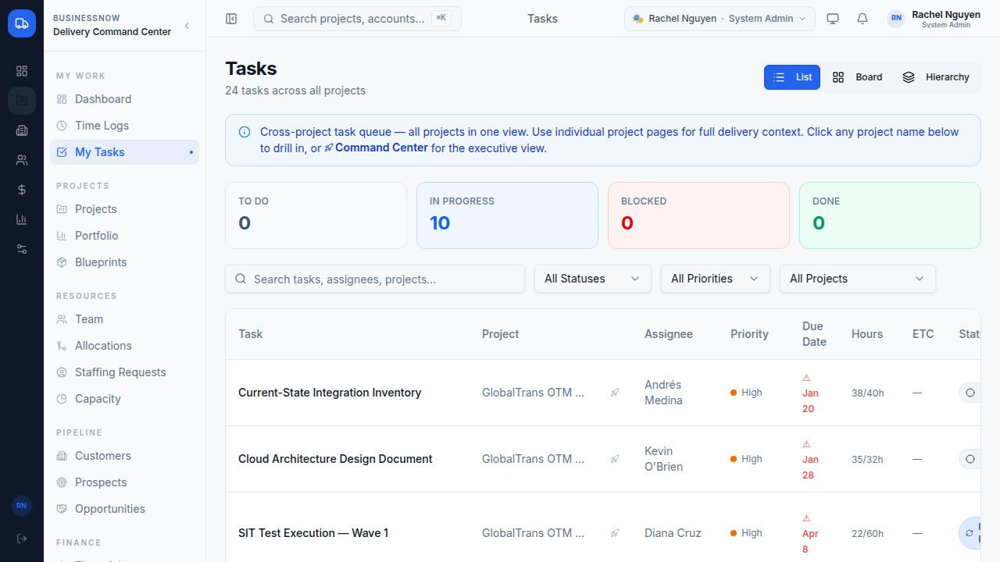
Figure 4.4 — Task list with hierarchy expansion. Columns include hierarchy level, estimated hours, actual hours, ETC, status, and assignee. Leaf tasks link directly to time entry rows.
4.5 Project Blueprints
Blueprints are reusable project templates containing pre-defined phases, milestones, and task structures. When creating a new project, selecting a blueprint populates the WBS automatically — reducing setup time from hours to minutes for standard OTM engagement types (Implementation, AMS, Upgrade, Certification).
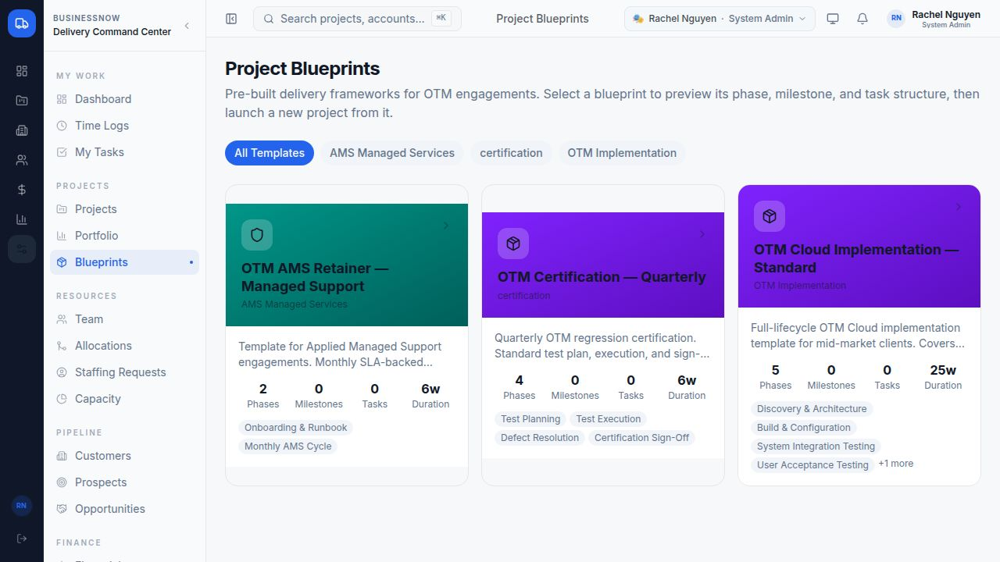
Figure 4.5 — Blueprint Templates library. Each template shows phase count, task count, and estimated duration. Click "Use Template" to create a project from it.
4.6 Portfolio View
The Portfolio view provides a sortable table of all projects with columns for health score, progress, budget, billed, and overdue invoice count. The At Risk tab filters to projects needing immediate attention, and the Director View shows a manager-tree grouped layout.
5.1 Weekly Timesheet Grid
Consultants log time on the Time Logs page using a weekly grid. Each row represents a Project + Task combination. Click any cell to enter hours in 0.25-hour increments. The grid shows the current week by default with ← → navigation for prior/future weeks.
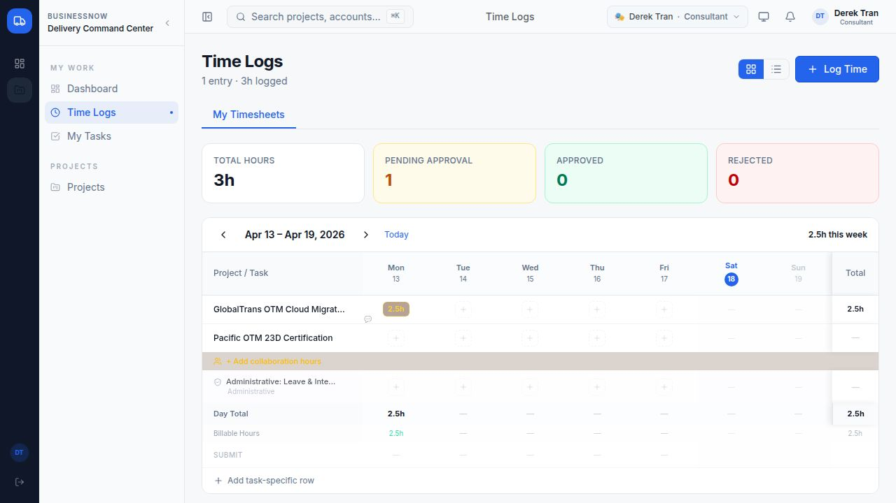
Figure 5.1 — Time Logs / Weekly Grid (Consultant view). The grid shows Day Total and Billable Hours rows at the bottom. A speech-bubble icon on a cell indicates a saved daily comment.
Grid Behavior
- Add a row: Click + Add task-specific row at the bottom to pick a project and task.
- Daily comment: Click a cell that has hours entered to expand it. A text area appears for a comment (e.g., "Facilitated kickoff workshop"). A comment icon indicates the cell has saved notes.
- Billable toggle: Non-billable hours are marked per-cell. The cell renders in a muted style. They are excluded from all billing reports and invoice calculations.
- Collaboration hours: The + Add collaboration hours row lets consultants tag teammates who contributed to their work. These are informational only — they do not create duplicate billing entries.
- Administrative row: The "Administrative: Leave & Internal" project is always available. Hours entered here are tracked separately and never appear in project billing.
Enter Hours
→
Add Comments
→
Set Billable / Non-billable
→
Submit Week
→
Awaiting PM Approval
5.2 Submission Rules
- Time can only be logged against Active projects. On Hold and Completed projects are blocked.
- Entries cannot be backdated before a resource's hire date.
- Minimum entry increment is 0.25 hours. The system rounds down values below this.
- Once submitted, rows are locked for editing until the PM approves or rejects.
- The next week's grid pre-populates with the same project/task rows from the current week (with 0.00 hours), saving recurring setup time.
5.3 Time Log Summary Stats
At the top of the Time Logs page, four stat cards show: Total Hours logged this week, Pending Approval count, Approved count, and Rejected count. Rejected entries are returned to the consultant with a reason for correction and resubmission.
6.1 PM Approval Queue
Project Managers access the Timesheet Approval page from the Time Logs section. It shows all submitted entries across their team members, filterable by Status, Project, Resource, and Date range. Each row shows the resource, date, project, hours, billable indicator, daily comment, billed role, and collaborators.
Figure 6.1 — Timesheet Approval Queue (Project Manager view). 23 pending entries shown. Filters allow narrowing by resource, project, or date range. Bulk-select checkboxes enable batch approve or reject.
Approval Actions
- Individual Approve/Reject: Expand any row for the action buttons. Rejection requires a mandatory reason that is surfaced to the consultant.
- Bulk Approve: Select multiple rows via checkboxes and approve or reject in one action.
- Partial approval: Within a week submission, individual entries can be approved and rejected independently — all-or-nothing is not required.
- Once approved, entries are locked for editing by the consultant. A finance-level lock provides a further control layer.
6.2 Self-Approval Prevention (v7)
A hard guardrail prevents any user — regardless of role — from approving their own time entries. This is enforced at both the UI level (approve button disabled with an "Own entry" badge) and the API level (HTTP 403 returned if the approver and resource match).
⚠️
Self-approval is blocked. If you submit a time entry and then switch to your Project Manager role, the approve button on your own entries will be disabled and show "Own entry". You cannot approve, reject, or bulk-process your own submissions under any role.
6.3 Approval Delegation (v7)
Project Managers can delegate their approval authority during absences (holiday, OOO) via the My Profile → Delegation Settings section. A delegation requires a mandatory end date and designates another user as the approver for the defined period.
Open My Profile
→
Delegation Settings
→
+ Delegate a Role
→
Set Delegate + End Date
→
Active Delegation Shown
- Active delegations are marked Active with the end date visible.
- Expired delegations are retained for audit history and shown as Expired.
- Delegated entries appear in the delegate's approval queue with a Delegated from [Name] indicator.
- You can revoke an active delegation at any time before its end date.
6.4 Approval Flow Summary
Consultant Submits
→
PM Approves
→
Finance Lock (optional)
→
Locked / Billable
7.1 Team — Utilization Heatmap
The Team page defaults to the Utilization Heatmap view. Every resource is listed as a row, with weekly utilization cells color-coded by intensity. The legend defines the color bands: Bench/Idle (grey), Available <60% (green), Optimal 60–90% (blue), Booked 90–110% (amber), and Overbooked >110% (red). Striped cells represent soft (pipeline) allocations.
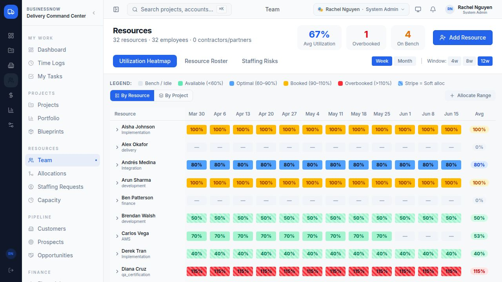
Figure 7.1 — Team Utilization Heatmap (Delivery Director view). 32 resources shown across a 12-week window. Toggle "By Resource" / "By Project" and window width between 4w / 8w / 12w. Click "+ Allocate Range" for batch allocation.
Heatmap Interactions
- Click any resource row to expand their allocation timeline.
- Switch between Week and Month granularity.
- By Project view inverts the matrix — projects on rows, resources in columns.
- Overbooked resources (>110%) show a red flag. Clicking the flag navigates to the conflict resolution view.
7.2 Assignments (Allocations)
The Assignments page provides a cross-project staffing overview — who is assigned to what, at a glance. Filter tabs separate Hard (confirmed) and Soft (pipeline) allocations. A Conflicts (2) tab highlights resources over-allocated across projects.
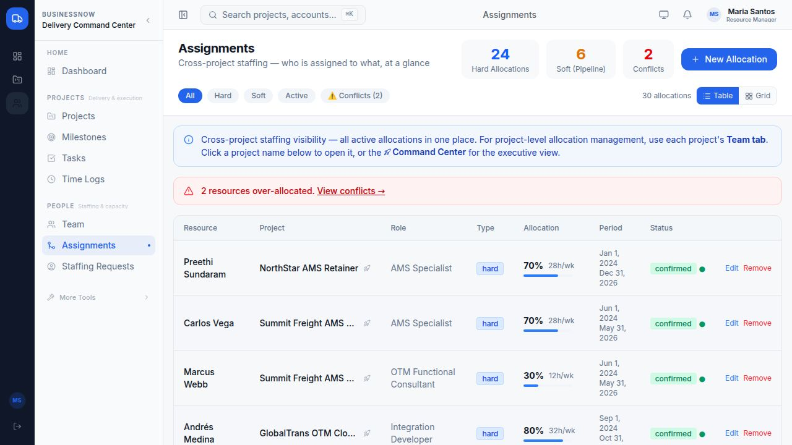
Figure 7.2 — Assignments (Allocations) page. Hard allocations show as solid percentage, soft pipeline allocations have a striped indicator. 2 conflict alerts shown.
7.3 Staffing Requests
When a project needs a new resource, a Staffing Request is raised with: role, required skills, project, timeline, allocation percentage, and priority (Critical / High / Medium / Low). The Resource Manager reviews requests in the Staffing Requests queue and fulfills them by assigning a team member.
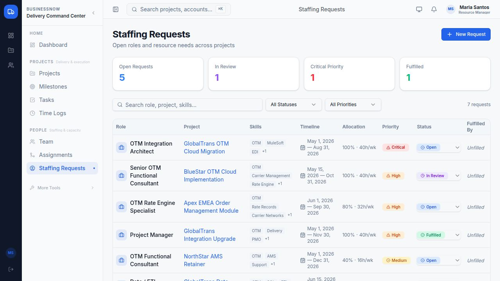
Figure 7.3 — Staffing Requests (Resource Manager view). Summary cards show Open / In Review / Critical / Fulfilled counts. Each row shows the role, project, required skills, timeline, allocation %, priority, and status.
7.4 Capacity Forecast
The Capacity Forecast page shows firm-wide delivery capacity versus demand over 4, 8, or 12 weeks. Resources are grouped by practice area. A top banner alerts when capacity constraints are detected in specific practice areas. Toggle Confirmed Only vs. Include Pipeline (Soft) to model scenarios.
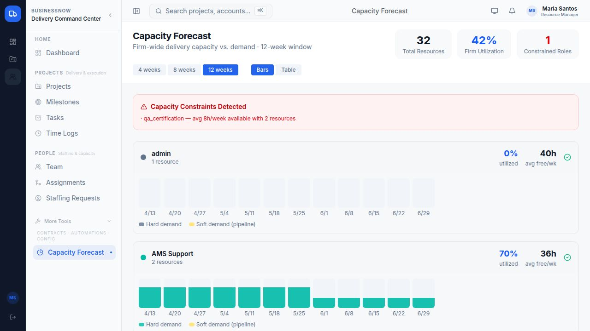
Figure 7.4 — Capacity Forecast (Delivery Director view, 12-week window). Capacity Constraints banner identifies constrained practice areas. Each practice area shows confirmed demand vs. pipeline soft demand over time.
8.1 Contract Manager
All client contracts are managed in the Contract Manager. BUSINESSNow supports four billing models: T&M (Time & Materials with hourly rate cards), Fixed-Bid (milestone-based), Retainer (recurring monthly), and AMS (Application Management Services). Each contract card shows total value, invoiced amount, remaining value, and invoicing progress.
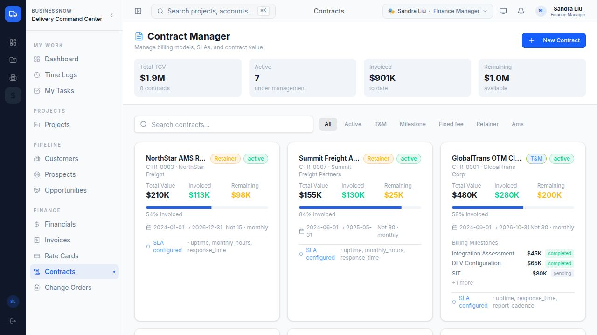
Figure 8.1 — Contract Manager (Finance Manager view). Summary: $1.9M TCV, $901K invoiced, $1.0M remaining. Filter by billing model using the tab bar. Milestone billing contracts show their stage breakdown inline.
8.2 Invoices
The Invoices module tracks invoice lifecycle from Draft through Sent, Overdue, and Paid. Summary cards at the top show Outstanding, Overdue (in red), and Paid totals. The Kanban view groups invoices by lifecycle stage; switching to Table view allows bulk status changes and sorting by amount or due date.
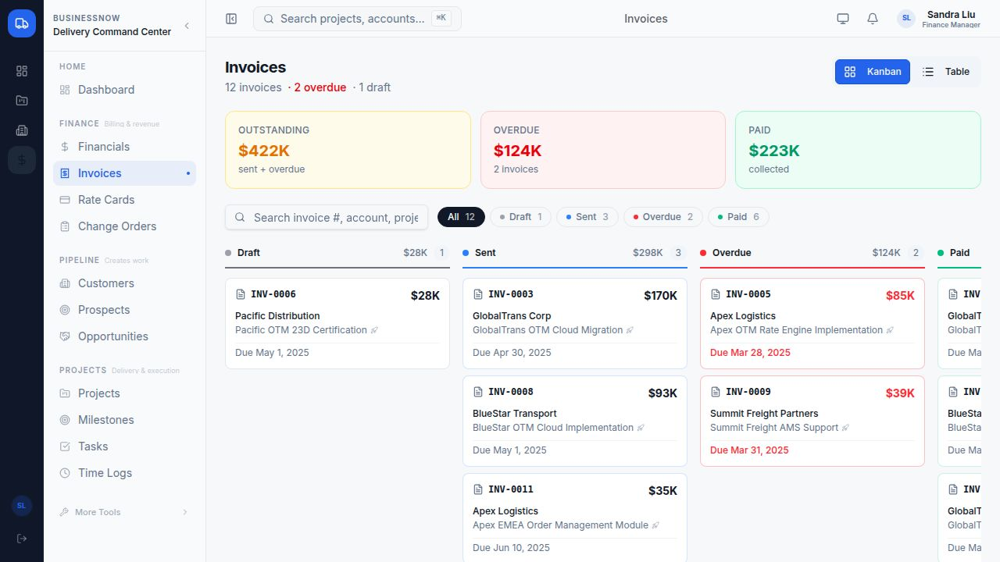
Figure 8.2 — Invoices (Finance Manager view). 12 invoices total: 1 draft, 3 sent, 2 overdue ($124K), 6 paid ($223K). Overdue invoices show the due date in red. T&M invoices link to the time-entry line items that generated them.
8.3 Rate Cards
Rate Cards define sell rates (what the client pays) and buy rates (resource cost) by role. Multiple named rate cards can exist — for example, per-client or per-engagement rate schedules. Rate cards are linked to contracts and drive T&M invoice generation from approved time entries.
🔒
Role-gated visibility. Consultants cannot see sell rates or buy rates. Project Managers can see sell rates but not buy rates. Finance Managers and Admins have full visibility into both.
8.4 Change Orders
The Change Orders module tracks scope changes through a 7-stage pipeline: Draft → Submitted → Estimating → Internal Review → Client Review → Approved → Delivered. Each change order tracks cost impact, timeline impact, and a leakage risk flag for work delivered before formal approval.
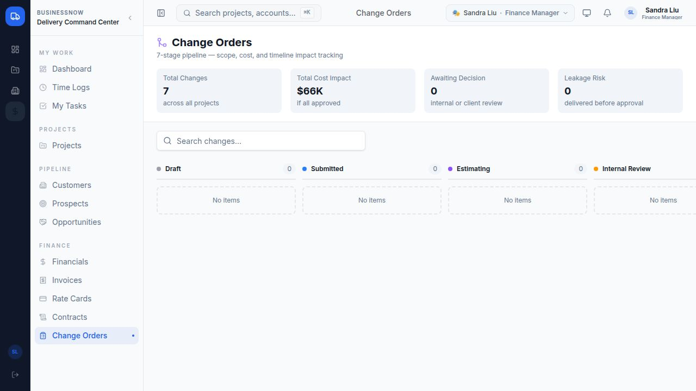
Figure 8.4 — Change Orders (Project Manager view). Summary cards show 7 total changes with $66K total cost impact across all projects. The kanban pipeline groups changes by stage with "Action needed" flags for items awaiting review.
9.1 Customers (Accounts)
The Customers directory lists all active and inactive accounts. Each entry shows the customer name, industry, segment (Enterprise / Mid-Market), status, health score, region, OTM version, renewal date, and ACV. Health scores drive the at-risk flag on the admin dashboard.
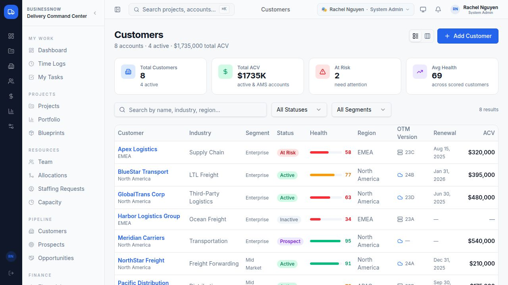
Figure 9.1 — Customers Directory. 8 accounts shown with $1.735M total ACV. Filter by status or segment. Health scores below 65 trigger "At Risk" flagging. Clicking a customer opens their full account detail with projects, contacts, and financial summary.
9.2 Prospects
Pre-customer entities are tracked as Prospects before they become paying accounts. The prospect record holds confidential contact details, sentiment ratings, engagement touchpoints, and the primary contact with their functional role. Once won, a prospect can be converted to a Customer with one click.
9.3 Opportunities
Opportunities represent specific pursuits within a Prospect or Customer account. Each opportunity can be linked to a prospect and optionally trigger a Staffing Request when it progresses to a stage that requires resource planning. The Opportunities view shows stage, value, win probability, and owner.
🆕
New in v7. The RBAC Dual-Mode Identity system is a major v7 addition. It replaces the single-role model with a multi-role assignment framework, a persistent role switcher, a My Profile page, and the delegation workflow.
10.1 How Roles Work
Every user in BUSINESSNow has:
- A base Employee (Self) role — always active, always present. This scopes the user to their own data only (their own timesheets, tasks, and profile).
- Zero or more elevated roles (Project Manager, Delivery Director, Finance Manager, System Admin, etc.) — assigned by a System Admin and visible in the top-bar role switcher.
Switching roles changes navigation items, data scope, and available actions immediately — no re-login required.
10.2 My Profile
Every user has a My Profile page accessible by clicking their name in the top-right corner. It shows:
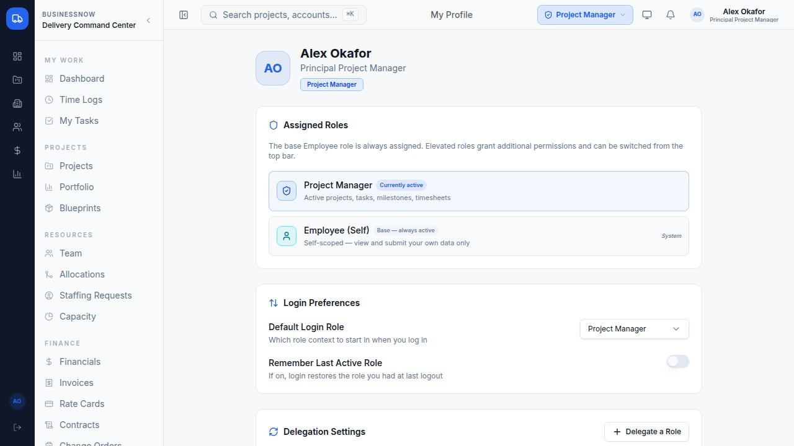
Figure 10.2 — My Profile (Project Manager view). Shows Assigned Roles with the currently active role highlighted, Login Preferences for default role and "Remember last active role" toggle, and the Delegation Settings section below.
Profile Sections
- Assigned Roles: All roles assigned to this user. The currently active role is highlighted. The base Employee (Self) role is always present and labeled "System — cannot be removed."
- Login Preferences:
- Default Login Role — which role to start in each login session (defaults to highest-privilege role).
- Remember Last Active Role — if toggled on, the system restores the role you were using when you last logged out.
- Delegation Settings: Create, view, and revoke approval delegations (see Section 6.3).
10.3 Delegation Settings
Delegation is managed entirely from the My Profile page. When you create a delegation:
- Select the role to delegate (e.g., your Project Manager approval authority).
- Select the delegate user (must be another active team member).
- Set a mandatory end date — open-ended delegations are not allowed.
- Optionally add a note (e.g., "Covering while I'm on annual leave").
Active delegations are listed with green status badges. Once past the end date they move to an expired history section. You can revoke an active delegation at any time before it expires.
11.1 Admin Panel
The Admin Panel (gear icon in the global rail, visible to System Admins only) provides system-wide metrics, data health monitoring, an audit log, and quick navigation links to management pages.
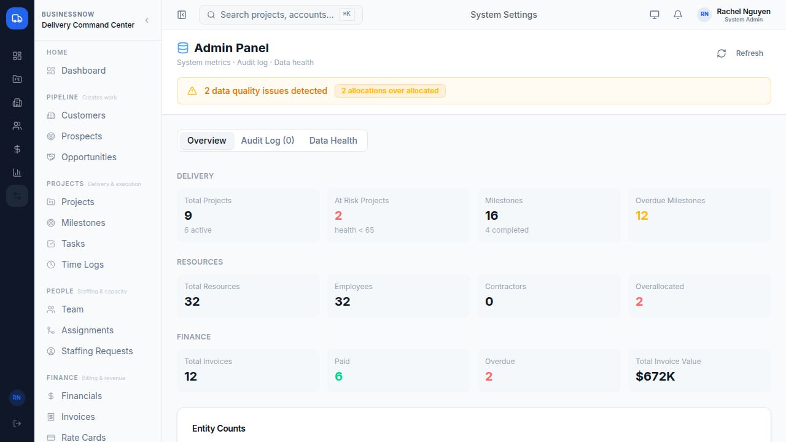
Figure 11.1 — Admin Panel (System Settings). Overview tab shows Delivery, Resources, and Finance metric grids. A data health banner calls out quality issues (projects without budget, over-allocated resources). System Management section links directly to User Management and PMO Settings.
Admin Panel Sections
- Data Health Banner: Lists specific issues detected (projects without budget, over-allocated allocations, orphaned tasks). Click a badge to navigate to the affected records.
- Delivery Metrics: Total projects, at-risk count, milestones, and overdue milestones.
- Resource Metrics: Total resources, employees, contractors, and overallocated count.
- Finance Metrics: Total invoices, paid, overdue, and total invoice value.
- System Management: Quick-link cards to User Management and PMO Settings.
- Audit Log tab: Full chronological log of system and user-triggered events.
11.2 User Management (v7 New)
The User Management page (accessible from Admin Panel → System Management → User Management, or directly via Settings) allows System Admins to manage role assignments for every user in the platform.
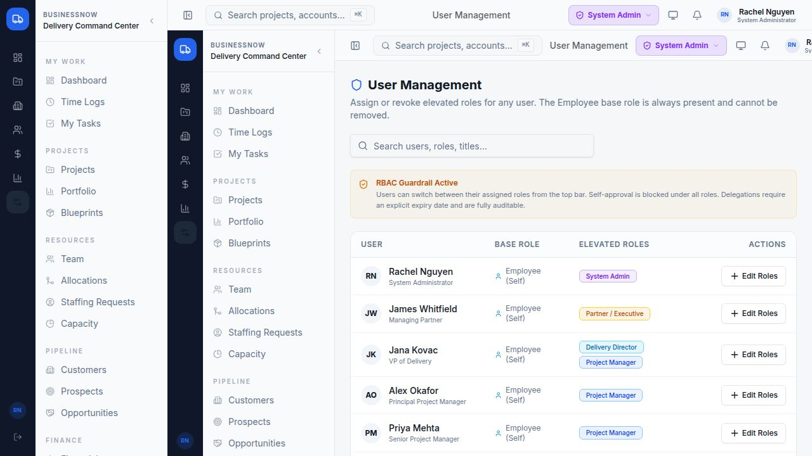
Figure 11.2 — User Management (System Admin view). The table shows each user's base role (Employee / Self — always locked), their elevated roles as colored badges, and an "Edit Roles" action. The RBAC Guardrail banner describes the active safety controls.
How to Edit a User's Roles
- Search for the user by name, role, or title using the search bar.
- Click + Edit Roles on any row.
- In the dialog, the Employee (Self) checkbox is locked — it cannot be removed. Toggle any elevated roles on or off.
- Click Save Changes. The user's role switcher will reflect the new assignments on their next page load.
- Reset to Default reverts the user to their original seed-data role assignment.
🔒
RBAC Guardrail Active banner confirms three platform-wide safety controls are in effect:
- Users can switch between their assigned roles from the top bar.
- Self-approval is blocked under all roles.
- Delegations require an explicit expiry date and are fully auditable.
11.3 PMO Settings
PMO Settings (accessible via Admin Panel or the Settings gear icon) contains three tabs:
- Rate Cards: Manage global and per-client rate schedules. Each rate card entry defines a role, sell rate, buy rate, and currency.
- Time Entry Categories: Configure the categorization taxonomy for billable activities (e.g., Consulting, Project Management, Travel).
- Blueprints: Create and edit project blueprint templates with pre-built phase and task structures.
The following table defines the access boundaries for each role. ✓ = full access, (R) = read-only, — = no access. All elevated roles include Employee (Self) base permissions.
| Module / Feature |
Employee
(Self) |
Consultant |
Project
Manager |
Delivery
Director |
Finance
Manager |
System
Admin |
| Dashboard |
Self only |
Self only |
PM Dashboard |
Director view |
Finance view |
Portfolio full |
| Projects — view |
Assigned only |
Assigned only |
Own projects |
✓ All |
✓ All |
✓ All |
| Projects — create / edit |
— |
— |
✓ |
✓ |
— |
✓ |
| Time entry — own |
✓ |
✓ |
✓ |
✓ |
✓ |
✓ |
| Time approval |
— |
— |
Own team only |
✓ |
— |
✓ |
| Self-approval |
Blocked |
Blocked |
Blocked |
Blocked |
Blocked |
Blocked |
| Sell rates (rate cards) |
— |
— |
✓ |
✓ |
✓ |
✓ |
| Buy rates (resource cost) |
— |
— |
— |
— |
✓ |
✓ |
| Invoices |
— |
— |
(R) own projects |
(R) |
✓ |
✓ |
| Contracts |
— |
— |
(R) |
(R) |
✓ |
✓ |
| Resources — heatmap |
— |
— |
Own team |
✓ All |
— |
✓ All |
| Staffing requests |
— |
— |
Create only |
✓ |
— |
✓ |
| Prospects / CRM |
— |
— |
— |
✓ |
— |
✓ |
| User management |
— |
— |
— |
— |
— |
✓ |
| PMO settings |
— |
— |
— |
— |
— |
✓ |
| Admin panel / Audit log |
— |
— |
— |
— |
— |
✓ |
| Delegation (give) |
— |
— |
✓ |
✓ |
✓ |
✓ |
| Role switcher |
N/A |
N/A (single) |
✓ (if multi-role) |
✓ (if multi-role) |
✓ (if multi-role) |
✓ |
Demo User Role Assignments
| Name | Title | Base Role | Elevated Role(s) |
|---|
| Rachel Nguyen | System Administrator | Employee (Self) | System Admin |
| James Whitfield | Managing Partner | Employee (Self) | Partner / Executive |
| Jana Kovac | VP of Delivery | Employee (Self) | Delivery Director Project Manager Consultant |
| Alex Okafor | Principal Project Manager | Employee (Self) | Project Manager Consultant |
| Priya Mehta | Senior Project Manager | Employee (Self) | Project Manager Consultant |
| Sandra Liu | Finance Director | Employee (Self) | Finance Manager |
| Maria Santos | Resource Manager | Employee (Self) | Resource Manager |
| Diana Flores | Business Development | Employee (Self) | Business Dev |
| Derek Tran, Aisha Johnson, et al. | OTM Specialists | Employee (Self) | Consultant |
BUSINESSNow v7.0 Product Documentation · KSAP Technologies · April 2026
Internal — All Staff · Do not distribute externally